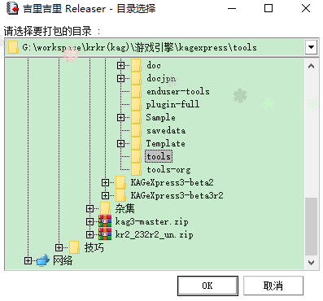

执行Releaser（tools文件夹中的krkrrel.exe）后，会提示您首先指定文件夹，所以请指定文件夹。
以此处指定的文件夹中的文件为对象。
Note
Releaser有一功能特性，它如果在创建最终归档文件的过程中发现内容完全相同的文件，即使文件名不同，也只使用一个文件的容量。
Note
Releaser会自动忽略CVS元信息目录(名为"CVS"，其中包含名为"Repository"的文件的目录)。另外，忽略名字开头以. (点)开头的文件或目录（例如UNIX风格的隐藏文件或Subversion元信息目录）。
Note
Releaser创建存档文件后，会在创建归档文件的目录中创建名
default.rpf 的文件。其中描述了创建存档文件时的选项，可以在下次创建存档文件时使用相同的设置轻松创建。